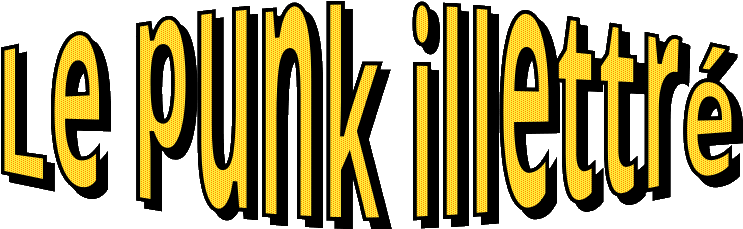

Point de bascule sans ce point, ou le début de la fin. 22 Mars 2050 En cette trentième célébration du premier confinement lié au Sars-Cov2 au Québec, profitons du recul que nous avons pour observer la paranoïa qui s’est emparée du monde en cette folle année 2020. D’abord, un virus. Possiblement issu d’un laboratoire du Wuhan, ou pas. Les déclassification d’archives se font attendre, les exigences de transparence portées par le peuple de Chine ne portent fruit qu’en de rares et insignifiantes occasions. Le faisceau d’indice laisse penser à une fuite, sans toutefois la confirmer. Ce virus, fort contagieux, a passé proche de déborder pas mal tous les systèmes de santé des pays par lesquels il est passé – quand ça ne l’a pas fait, comme en Italie. Et ça a créé une certaine panique pour cette raison, puisque la létalité propre du virus n’était tant qu’à elle pas si effrayante. Le Québec a été pas mal suiveux tout du long de cette aventure pandémique. Malheureusement y suivaient pas toujours les meilleures idées. Observateur binational que j’étais, je voyais de nouvelles mesures iniques prendre forme en France, sous couvert d’un état d’urgence sanitaire, trouver leur copie presque conforme en un temps de plus en plus court ! Effet pervers d’une prétendue culture francophone, notre belle province en a surtout retiré le titre peu enviable de l’endroit le plus contrôlant d’Amérique du Nord, chapeau l’artiste ! Déclaration de l’état d’urgence sanitaire, ayant pour effet d’annuler pratiquement tout contre pouvoir, 1er confinement, suivi d’un second, d’un couvre-feu. L’économie a été mise sans dessus dessous, appelant la création de qui a ressemblé au premier test grandeur nature d’un salaire universel. L’arrêt total ou presque de l’aviation civile, de la circulation maritime, la résilience de la vie sauvage qui est réapparue immédiatement dans ces espaces rendus à leur vocation première. Les corollaires des inactions entreprises ont pu avoir quelques effets positifs, mais revenons un instant sur les prémices. Des gouvernements ont pris des décisions unilatérales de contrôle totalement infantilisantes de leurs populations à une échelle sans précédent. Évidemment, ça n’a pas fonctionné partout pareil. Ce genre de mesures était inenvisageable dans bien des pays ou le niveau d’administration n’atteint pas les tristes sommets de nos belles démocra… décroma… démacro… bref, de nos institutions. Donc pendant que nous nous faisions enfermer tels de bons moutons consentant – au moins en apparence, sous la menaces de lourdes amendes – de nombreux pays n’avaient pas, ou ne voulaient pas, suivre cette lourde tendance. Pour de nombreuses mauvaises raisons encore plus démagogique que les tenant du contrôle absolu d’ailleurs ! Plusieurs dirigeants peu recommandables s’en sont fait les chantres, d’autres bien plus intelligent et considérant leurs populations en adultes responsables y ont fort bien réussi. Il est notable que ces premiers démagogues ont essaimé plus de variant du virus initial que les seconds, nous y reviendrons. Étaient entre temps arrivés des vaccins en un temps absolument record ! La solution tant attendue à notre problème pandémique s’en est trouvé pas mal amoindrie dans son exceptionnalité, puisque l’incertitude de l’efficacité vaccinale sur les variant était une inconnue totale. Mais cela ne mis pas à mal la créativité des dirigeants de l’époque pour autant. Fier de tenir enfin une solution extérieure à leurs manies totalitaires, ils firent preuve d’encore plus d’autoritarisme crasse pour s’assurer l’obéissance de leurs administrés : le passeport vaccinal. Après tout, les sondages montraient un taux de satisfaction record. Le bon papa Legault semblait plaire aux répondants. Notre cher tonton Trudeau quant à lui s’est même payé un tour d’élection en pensant peut-être devenir majoritaire… mais dépensant finalement 650 millions de dollars pour reformer le même parlement, ou presque. Du haut de leur morgue, supportés par les firmes de sondages, nos chers sinistres ont donc encore une fois importé, tout en l’empirant, l’idée d’un passeport vaccinal. Vient donc la bascule. Après plus de 18 mois d’improvisation infantilisante, le sinistre de la santé se cru en bonne posture pour forcer ses ouailles à se faire piquer pour la cause. Ultimatum à l’appui, visant un improbable 95 % de vaccination dont le bien fondé est, plus que discutable, une insulte au bon sens, notre élite annonce que tout le personnel de la santé doit être vacciné d’ici au 15 octobre, sous peine de suspension sans solde. Les chars d’assaut médiatiques sont au rendez vous : on offre quelques cacahuètes en prenant soin de bien les emballer. Un milliard est ainsi diverti du budget pour tenter de gagner de nouveaux bras à piquer parmi le personnel de santé. Les nananes ne suffirent pas à faire voir la lumière à tout ce personnel éclairé. Quatorze mille d’entre eux n’avaient encore reçu aucune injection au 13 octobre. Huit mille se sont peut-être laissé tenté par l’appât des cacahuètes et avaient ainsi reçu leur première dose, sans pour autant pouvoir recevoir le precieux sésame en ce jour fatidique du Vendredi 15 octobre. Ajoutant l’insulte à l’injure, le sinistre de la santé voit bien qu’il va sinistrer son propre réseau s’il poursuit le bras de fer engagé sans bien se rendre compte de la carrure de son adversaire. Il annonce donc le 13 octobre un délai de grâce pour que ses ouailles retrouvent le droit chemin avant le 15 novembre, amen. Plusieurs choses se sont alors passées. La première, c’est qu’il était trop tard. La porte était ouverte pour un congé sans solde, sans radiation des ordres professionnels. Monsieur le sinistre croyait-il donc que sa piétaille allait attendre son bon vouloir pour savoir s’ils pourraient manger et se loger deux jours seulement après son annonce ? Cela n’eut évidemment pas l’effet escompté. Le réseau de la santé perdit des plumes, le gouvernement gagna le goudron pour les y coller. Les journaux titrèrent unanimement : « La grande débarque ». Le ministre démissionna, bon bouc émissaire d’une envolée totalitaire débilitante. Le gouvernement dû revoir ses ambitions vaccinales à la baisse, après tout le 75 % de couverture exigé préalablement était déjà largement atteint et l’efficacité du vaccin, loin d’être excellente, était suffisante pour que le réseau de la santé même affaiblit pu prendre un excellent soin des rares personnes développant suffisamment de complications pour devoir être admise en soins intensifs. De toute façon, d’autres traitements arrivèrent presque au même moment, et l’on vit enfin le Sars-Cov2 de l’œil serein qui nous permis de le considérer comme une grippe comme les autres. Aujourd’hui, 30 ans plus tard, nous rigolons bien de cette panique planétaire pour ce virus tant affaiblit qu’il est presque éteint. Nous rigolons jaune cependant, car l’effort déployé pour ce qui fut presque une chimère n’a été que le banc d’essai d’un nouveau totalitarisme dont le véritable achèvement prit place dans les mesures de mitigation du réchauffement climatique. Échauffés dans un sens anti-démocratique, excités par les méthodes de contrôle des populations déployés par la Chine et possédant les police les plus armées de leurs histoires, chacun de ces pays sans exception s’est servi de ces leviers pour imposer une décroissance socialement sélective qui n’en a jamais porté le nom. Les valeurs de l’humanisme libéral ont démontré les moyens eugénistes nécessaires à leurs propres survie.
22 Mars 2050 Point de bascule sans ce point